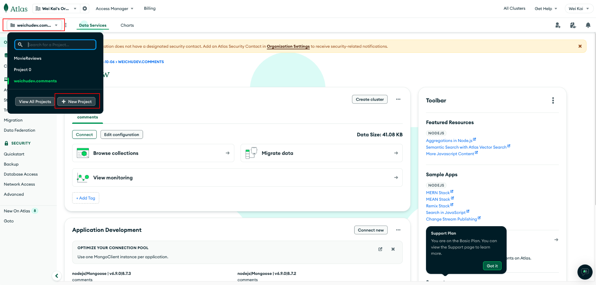

Creating the backend of my website with Node.js & MongoDB
After I created my frontend content ( see the article [Creating the frontend of my website with Github Page]), I decided to add a commenting function for more audience interaction, and also thought this would be an amazing idea to practice backend creation. ( According to some of the definition I have read, I guess this makes my website dynamic? Let me know if you think it is not. I understand the comment function is very basic for a dynamic website compared with website like Amzon or Tripadvisor, etc.)
Without further ado, let’s go!
source: Streamlining Backend-Frontend Integration: A Quick Guide
Step 01 | Preparation - Document Management
1. Brief:
- Setting up server files for configuring a CRUD methods based REST API
- Setting up a MongoDB Atlas account, project and new cluster.
- Start configuring the routing mechanism for accessing the database.
- Creating API endpoints based on the CRUD methods.
- Run the connection code file with Node.js.
- Testing the API with Postman or Termnals.
2. Directory File Structure:
In the same directory of my HTML, CSS and JS files, I created the following objects for the backend.
Step 02 | Setting up a MongoDB Atlas account, project and new cluster.
Key Steps:
-
Creating a new project


-
Creating a cluster


-
Connection Form
A connection form will pop-up after “Create Deployment” is clicked. Memo down the “Username” & “Password”, this will be needed as the environment variables for connecting to the database. Click the “Create Database User” before proceeding to “Choose a connection method”

-
Connection Method
Choosing the Connection Method. Choosing “Drivers” option as the connection method, which will allow us to access the database with native drivers, like Node.js, Go, etc.

-
Connection String
In the next connection step, set the choice of the driver / version as
Node.js / v 5.5or later. Following the instruction of installing the driver. Memo down the connection string which will be needed to include in the server routing file.
-
Cluster & Collection
Go to the “Clusters” pane in the menu on the left side of the screen, the newly created cluster will be found. In each cluster, the data will be stored as a collection, which will be found by clicking “Browse Collections” (At the moment no data can be found in there).


Step 03 | Start configuring the routing mechanism for accessing the database
Key Steps:
-
Setup environment variable
-
Creating a cluster
creating .env (specified in .gitignore) file for storing the user credential to the DB.
-
Connection Form
A connection form will pop-up after “Create Deployment” is clicked. Memo down the “Username” & “Password”, this will be needed as the environment variables for connecting to the database. Click the “Create Database User” before proceeding to “Choose a connection method”
-
Connection Method
Choosing the Connection Method. Choosing “Drivers” option as the connection method, which will allow us to access the database with native drivers, like Node.js, Go, etc.
-
Connection String
In the next connection step, set the choice of the driver / version as
Node.js / v 5.5or later. Following the instruction of installing the driver. Memo down the connection string which will be needed to include in the server routing file.
-
Cluster & Collection
Go to the “Clusters” pane in the menu on the left side of the screen, the newly created cluster will be found. In each cluster, the data will be stored as a collection, which will be found by clicking “Browse Collections” (At the moment no data can be found in there).
Step 04 | Creating my project works intro. section
HTML:
- Creating the main title and subtitle of this module. (class: workintro-title )
- Using multiple elements to create cards (class: work-example ) in a technical topic catalogue (class: myWorks_menu ) which links to various work example articles.
- Creating buttons linking to pop out pages (class: overlay1 - overlay5). Each pop-out page will overlay on main page containing work examples menu related to 1 of the 5 technical topics.
💡 The code snippet here only demonstrates the HTML code belonging to one of the technical topics. Please refer to my repository for the full HTML code.
index.html
JavaScript:
Overlay Button Click Handlers:
- Adds click event listeners to buttons with IDs openOverlayBtn1 to openOverlayBtn5.
- When a button is clicked, it sets the display style of the corresponding overlay (overlay1 to overlay5) to flex, making it visible.
Overlay Close Functions:
- Defines functions closeOverlay1 to closeOverlay5 that set the display style of the corresponding overlay to none, which will hide the pop-out page.
script.js
Step 05-1 | Creating the web background geometry using JavaScript - Wave Noise Pattern
HTML:
Creating Canvas Placeholder for the JS Generated Geometry
- Creating a module using div with a class called “background-circle”. In side the
divmodule,canvaselement creates a placeholder to create visualisation space for the JavaScript generated graphic elements, which is a gradient circle here in my website.
- Creating a module using div with a class called “background-circle”. In side the
index.html
JavaScript:
script.js
Canvas Setup:
const canvas = document.getElementById('myCanvas');: Get the canvas element by its ID.const ctx = canvas.getContext('2d');: Get the 2D drawing context of the canvas.const width = canvas.width;: Get the width of the canvas.const height = canvas.height;: Get the height of the canvas.const centerX = width / 2;: Calculate the X-coordinate of the canvas center.const centerY = height / 2;: Calculate the Y-coordinate of the canvas center.const radius = width / 2;: Set the radius for the circle to half the canvas width.
Function Definition:
function drawWaveCurve(ctx, startX, startY, amplitude, frequency, phase, length): Define a function to draw a wave curve.ctx.beginPath();: Start a new path.ctx.moveTo(startX, startY);: Move to the starting point of the wave.- Loop through the X-coordinates to draw the wave:
const y = startY + amplitude * Math.sin(frequency * (x - startX) + phase);: Calculate the Y-coordinate using a sine function.ctx.lineTo(x, y);: Draw a line to the calculated point.
ctx.stroke();: Render the wave curve.
Canvas Drawing:
ctx.clearRect(0, 0, width, height);: Clear the entire canvas.ctx.save();: Save the current context state.ctx.translate(centerX, centerY);: Translate the context to the center of the canvas.ctx.rotate(30 * Math.PI / 180);: Rotate the context by 30 degrees (converted to radians).ctx.translate(-centerX, -centerY);: Translate back to the original position.
Draw Circle and Waves:
ctx.beginPath();: Start a new path for the circle.ctx.arc(centerX, centerY, radius, 0, 2 * Math.PI);: Draw a circle centered at the canvas center.ctx.clip();: Clip the drawing area to the circle.- Loop to draw multiple wave curves:
- Calculate random starting Y-coordinate, amplitude, frequency, and phase for each wave.
ctx.strokeStyle = rgba(255, 255, 0, ${Math.random() * 0.5 + 0.5});: Set a random stroke color with random opacity.ctx.lineWidth = 1;: Set the line width to 1.drawWaveCurve(ctx, startX, startY, amplitude, frequency, phase, length);: Draw the wave curve using the defined function.
ctx.translate(-centerX, -centerY);: Translate back to the original position.
CSS:
style.css
Configuring the position and the size of the webpage background geometry:
- Using styling to customise the position and size of the JavaScript generated graphic elements. The
z-indexattribute allows the image move backward becoming the backdrop of other HTML elements overlapping on the top of it.
- Using styling to customise the position and size of the JavaScript generated graphic elements. The
Step 05-2 | Creating the web background geometry using JavaScript - Gradients Moons
HTML:
Creating Canvas Placeholder for the JS Generated Geometry
- Creating a module using div with a class called “background-circle”. In side the
divmodule,canvaselement creates a placeholder to create visualisation space for the JavaScript generated graphic elements, which is a gradient circle here in my website.
- Creating a module using div with a class called “background-circle”. In side the
aboutMe.html
JavaScript:
aboutMe.js
- Firstly, using Canvas API to set up a 2D canvas that placed at the placeholder created by the
canvaselement in the HTML file. This will be the virtual drawing board for JavaScript to generate the graphical content. - Secondly, creating a radial gradient property using
ctx.createRadialGradient(x0, y0, r0, x1, y1, r1)method. The parameters define two circles: the inner circle with center(x0, y0)and radiusr0, and the outer circle with center(x1, y1)and radiusr1. The parameterscanvas.width/2, canvas.height/2, 0define the inner circle, centered at the middle of the canvas with a radius of 0. These parameters0, canvas.height/2, canvas.widthdefine the outer circle, centered at the left edge of the canvas vertically centered, with a radius equal to the canvas width. - Lastly, start drawing the shape using the method
beginPath(). Usingarc(x, y, radius, startAngle, endAngle)method to define the the radius and angles of the arc in radians. The parameterscanvas.width / 2, canvas.height / 2set the center of the arc to the middle of the canvas.canvas.width / 2sets the radius of the arc to half the width of the canvas, making it a circle that fits within the canvas. The parameters0, 2 * Math.PIdefine the start and end angles of the arc in radians.0is the start angle, and2 * Math.PIis the end angle, which completes a full circle.
CSS:
aboutMe.css
Configuring the position and the size of the webpage background geometry:
- Using styling to customise the position and size of the JavaScript generated graphic elements. The
z-indexattribute allows the image move backward becoming the backdrop of other HTML elements overlapping on the top of it.
- Using styling to customise the position and size of the JavaScript generated graphic elements. The
Step 06 | Others
By using HTML and CSS code, I also created a web page module for showing my selected blogs, my career interest with the link to my LinkedIn profile and a footer of my website providing another set of identical navigation bar.
💡 Please refer to my GitHub repository to look at the full code.
×
troubleshoot Notes
Issue 01 | Forcing Fonts
I used a font-family called ‘ Cascadia Code ’ and somehow I noticed that the website is not displaying the right font-family on google browser and iOS Safari browser.
Fix:
I used the
@font-facerule in CSS to make sure the font-family is loaded when my website is accessed.💡 Note:
- Making sure the "Cascadia Code" font files are in the formats needed.
.woff,.woff2formats have better compatibility across browsers. - Placing font-face rule at the very beginning of the CSS file to make sure it is loaded across the website as soon as the website has been loaded.
- Making sure the reference URL is set correctly based on the web files directory structure. (./ or ../ to begin with)
Issue 02 | Missing Zooming Control for Image Focus View
Error:
Image can't be zoomed in and out after entering the the focus view
Fix:
I added the following JS code to create zooming buttons displaying in the image focus view.
article-01-firstFrontend.js
result